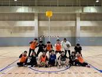

Korfball (Dutch: korfbal) is a ball sport, with similarities to netball and basketball. It is played by two teams of eight players with four female players and four male players in each team. The objective is to throw a ball into a netless basket that is mounted on a 3.5 m (11.5 feet) high pole.
The sport was invented by Dutch school teacher Nico Broekhuysen in 1902. In the Netherlands there are approximately 500 clubs and more than 90,000 people playing korfball. The sport is also played in Belgium and Taiwan, and in nearly 70 other countries.